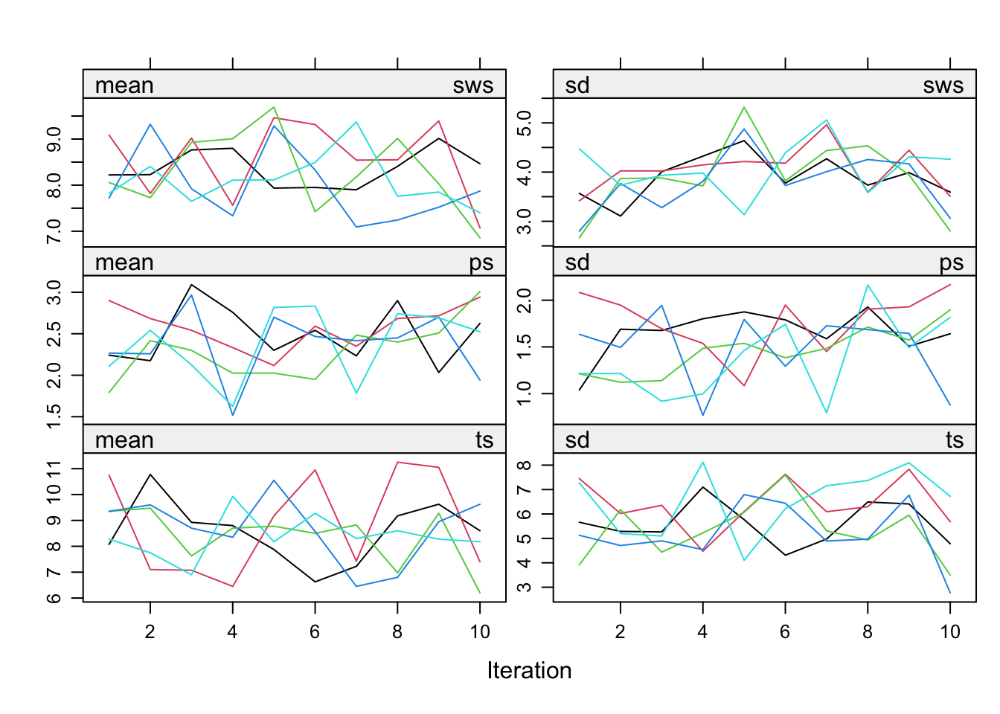
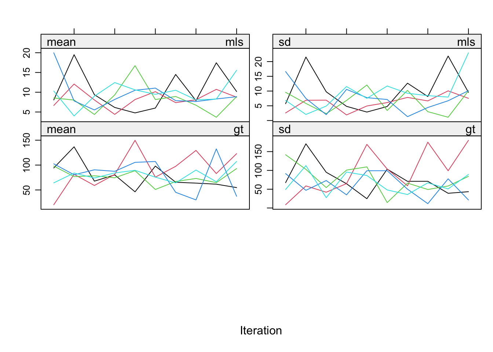
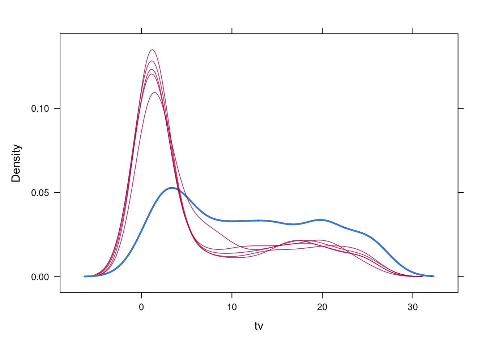
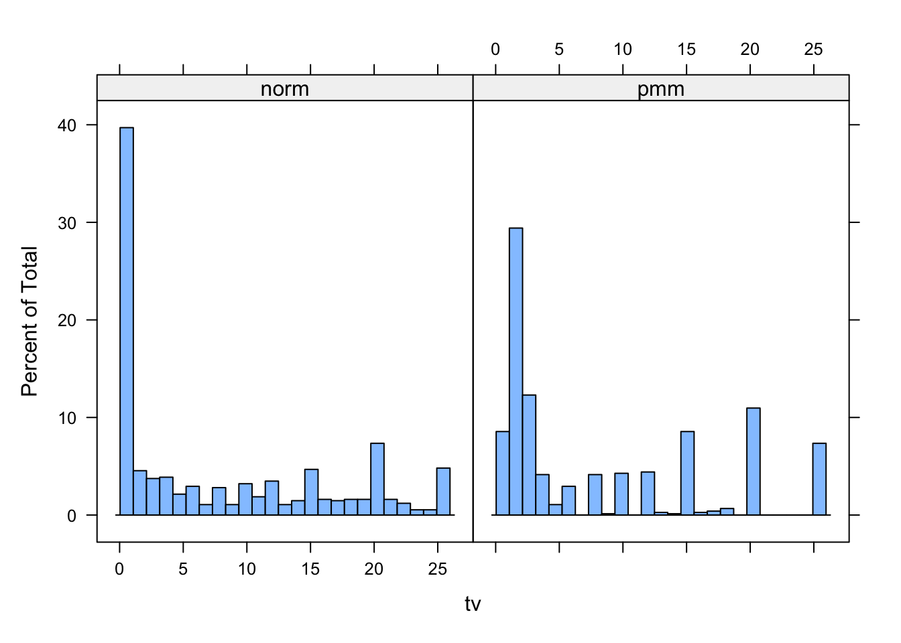
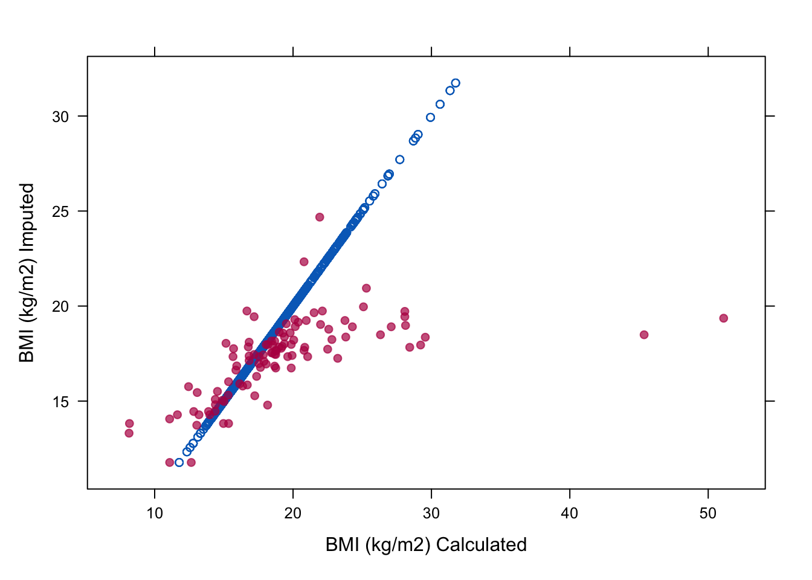
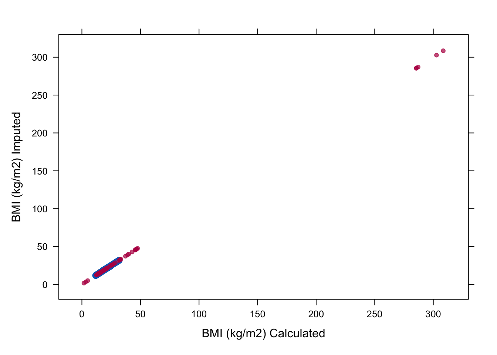
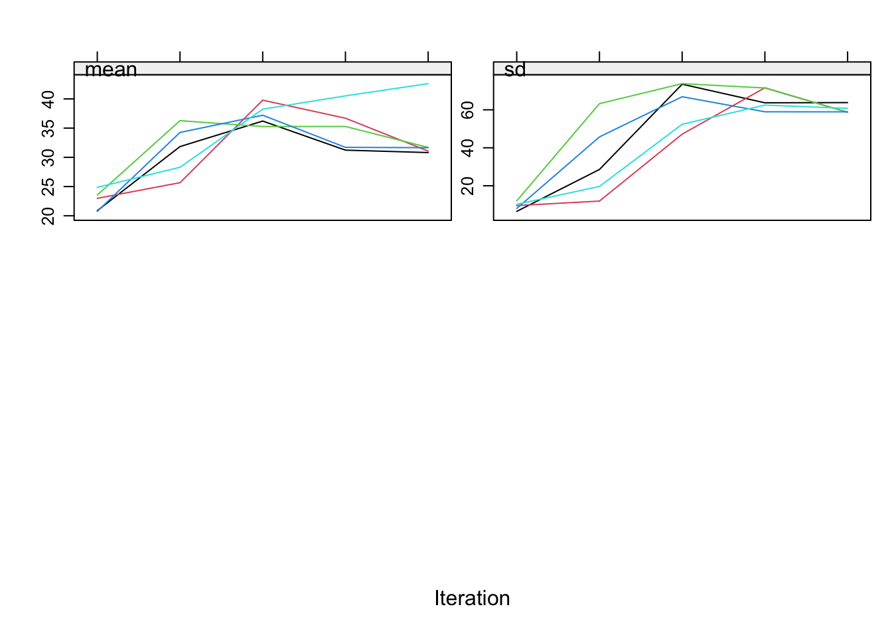
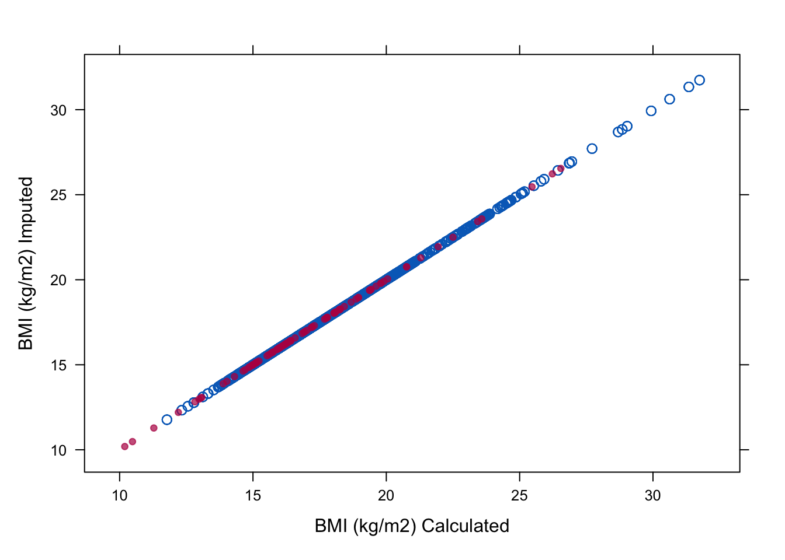
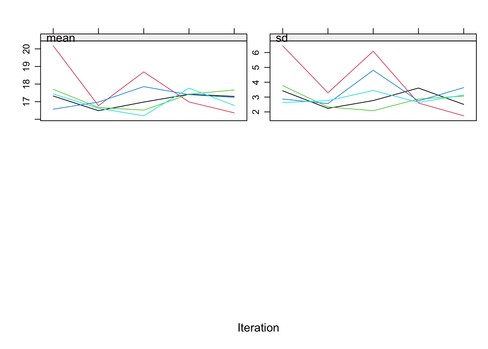
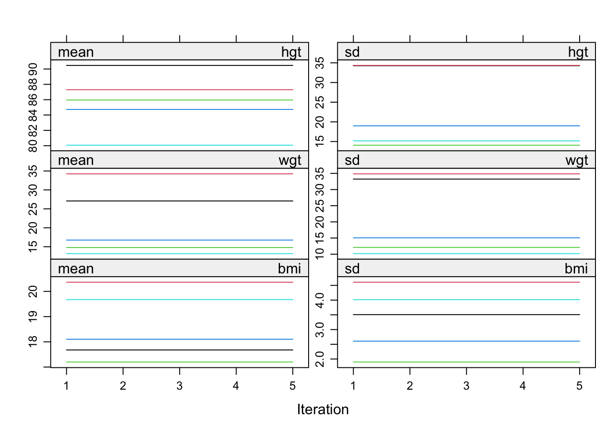

require(mice)
require(lattice)
set.seed(123)mice: Passive imputation and Post-processing
Vignette 4 of 10
This is the fourth vignette in a series of ten.
In this vignette we will walk you through the more advanced features of mice, such as post-processing of imputations and passive imputation.
1. Open R and load the packages mice and lattice.
We choose seed value 123. This is an arbitrary value; any value would be an equally good seed value. Fixing the random seed enables you (and others) to exactly replicate anything that involves random number generators. If you set the seed in your R instance to 123, you will get the exact same results and plots as we present in this document.
Passive Imputation
There is often a need for transformed, combined or recoded versions of the data. In the case of incomplete data, one could impute the original, and transform the completed original afterwards, or transform the incomplete original and impute the transformed version. If, however, both the original and the transformed version are needed within the imputation algorithm, neither of these approaches work: One cannot be sure that the transformation holds between the imputed values of the original and transformed versions. mice has a built-in approach, called passive imputation, to deal with situations as described above. The goal of passive imputation is to maintain the consistency among different transformations of the same data. As an example, consider the following deterministic function in the boys data [ = ] or the compositional relation in the mammalsleep data: [ = +]
2. Use passive imputation to impute the deterministic sleep relation in the mammalsleep data. Name the new multiply imputed dataset pas.imp.
ini <- mice(mammalsleep[, -1], maxit=0, print=F)
meth<- ini$meth
meth bw brw sws ps ts mls gt pi sei odi
"" "" "pmm" "pmm" "pmm" "pmm" "pmm" "" "" "" pred <- ini$pred
pred bw brw sws ps ts mls gt pi sei odi
bw 0 1 1 1 1 1 1 1 1 1
brw 1 0 1 1 1 1 1 1 1 1
sws 1 1 0 1 1 1 1 1 1 1
ps 1 1 1 0 1 1 1 1 1 1
ts 1 1 1 1 0 1 1 1 1 1
mls 1 1 1 1 1 0 1 1 1 1
gt 1 1 1 1 1 1 0 1 1 1
pi 1 1 1 1 1 1 1 0 1 1
sei 1 1 1 1 1 1 1 1 0 1
odi 1 1 1 1 1 1 1 1 1 0pred[c("sws", "ps"), "ts"] <- 0
pred bw brw sws ps ts mls gt pi sei odi
bw 0 1 1 1 1 1 1 1 1 1
brw 1 0 1 1 1 1 1 1 1 1
sws 1 1 0 1 0 1 1 1 1 1
ps 1 1 1 0 0 1 1 1 1 1
ts 1 1 1 1 0 1 1 1 1 1
mls 1 1 1 1 1 0 1 1 1 1
gt 1 1 1 1 1 1 0 1 1 1
pi 1 1 1 1 1 1 1 0 1 1
sei 1 1 1 1 1 1 1 1 0 1
odi 1 1 1 1 1 1 1 1 1 0meth["ts"]<- "~ I(sws + ps)"
pas.imp <- mice(mammalsleep[, -1], meth=meth, pred=pred, maxit=10, seed=123, print=F)We used a custom predictor matrix and method vector to tailor our imputation approach to the passive imputation problem. We made sure to exclude ts as a predictor for the imputation of sws and ps to avoid circularity.
We also gave the imputation algorithm 10 iterations to converge and fixed the seed to 123 for this mice instance. This means that even when people do not fix the overall R seed for a session, exact replication of results can be obtained by simply fixing the seed for the random number generator within mice. Naturally, the same input (data) is each time required to yield the same output (mids-object).
3. Inspect the trace lines for pas.imp.
plot(pas.imp)

We can see that the pathological nonconvergence we experienced before has been properly dealt with. The trace lines for the sleep variable look okay now and convergence can be inferred by studying the trace lines.
Post-processing of the imputations
Remember that we imputed the boys data in the previous tutorial with pmm and with norm. One of the problems with the imputed values of tv with norm is that there are negative values among the imputations. Somehow we should be able to lay a constraint on the imputed values of tv.
The mice() function has an argument called post that takes a vector of strings of R commands. These commands are parsed and evaluated after the univariate imputation function returns, and thus provides a way of post-processing the imputed values while using the processed version in the imputation algorithm. In other words; the post-processing allows us to manipulate the imputations for a particular variable that are generated within each iteration. Such manipulations directly affect the imputed values of that variable and the imputations for other variables. Naturally, such a procedure should be handled with care.
4. Post-process the values to constrain them between 1 and 25, use norm as the imputation method for tv.
ini <- mice(boys, maxit = 0)
meth <- ini$meth
meth["tv"] <- "norm"
post <- ini$post
post["tv"] <- "imp[[j]][, i] <- squeeze(imp[[j]][, i], c(1, 25))"
imp <- mice(boys, meth=meth, post=post, print=FALSE)In this way the imputed values of tv are constrained (squeezed by function squeeze()) between 1 and 25.
5. Compare the imputed values and histograms of tv for the solution obtained by pmm to the constrained solution (created with norm, constrained between 1 and 25).
First, we recreate the default pmm solution
imp.pmm <- mice(boys, print=FALSE)and we inspect the imputed values for the pmm solution
table(complete(imp.pmm)$tv)
1 2 3 4 5 6 8 9 10 12 13 14 15 16 17 18 20 25
64 220 92 31 8 22 31 1 32 33 2 1 64 2 3 5 82 55 Now, we inspect the imputed values for the norm solution
table(complete(imp)$tv)
1 1.04765626076076 1.06850744132516 1.10592998910862
295 1 1 1
1.20730719285169 1.24187503731931 1.25217703521875 1.3431238400032
1 1 1 1
1.43340328493328 1.56390724622927 1.92459899905457 2
1 1 1 26
2.22362050518801 2.25183115782234 2.34547451259226 2.35357321335211
1 1 1 1
2.58040160876244 2.69673415107593 2.78052682429925 2.96407460219848
1 1 1 1
3 3.00650554011491 3.17764057130238 3.18083020006692
19 1 1 1
3.19389551375974 3.21667310935236 3.28626617581969 3.51924658014597
1 1 1 1
3.53901770668924 3.61977669204177 3.8797990088058 3.97926934844286
1 1 1 1
3.9900157454526 4 4.06042095256628 4.22694246630602
1 17 1 1
4.29130000928007 4.30862947298446 4.37387945763616 4.37537718505784
1 1 1 1
4.55235899105437 4.81019273467669 4.83908926626029 5
1 1 1 5
5.04777694212134 5.14146238911168 5.19146144165499 5.33712260877789
1 1 1 1
5.34978402872541 5.39306678805702 5.41771633425926 5.55496083813505
1 1 1 1
5.56166676641967 5.62471111732166 5.76826187764073 5.90344832732374
1 1 1 1
5.9125972433633 6 6.06171454825624 6.17188152401789
1 10 1 1
6.50027689106417 6.6121473242796 6.62366972680022 6.71009258164643
1 1 1 1
6.78660561533969 6.82023291191748 6.93969443361718 7.20670254516833
1 1 1 1
7.31833998419389 7.44337884207534 7.51257425309894 7.5235240441055
1 1 1 1
7.52360629488164 7.66455874369213 8 8.04006995448565
1 1 13 1
8.16570903547774 8.35250937024199 8.4579188283566 8.90575593715416
1 1 1 1
9 9.10934592101191 9.20885854479667 9.26156587553364
1 1 1 1
9.29355874917571 9.5812867087336 9.78905873169104 9.83456792046614
1 1 1 1
9.86765016234437 9.93634100590388 9.94638005921571 10
1 1 1 16
10.1722306905023 10.3246561167553 10.4090794123788 10.4928534007062
1 1 1 1
10.5675202054327 10.5769768123748 10.7511961751585 10.7690320389986
1 1 1 1
10.8669515807312 10.9113698228937 10.9335673899359 11.2550096934402
1 1 1 1
11.3928306269214 11.3938064531829 11.4196038098713 11.4318468440325
1 1 1 1
11.6787996459044 11.7908946367069 11.794811127912 12
1 1 1 15
12.0805561600205 12.092530545071 12.141016124024 12.2269177760078
1 1 1 1
12.250545177925 12.3073763054301 12.4148260278839 12.4269150733802
1 1 1 1
12.5443605993662 12.9527866090667 13 13.0298612954944
1 1 1 1
13.2321196893653 13.2653923692569 13.3504640851202 13.5026934067198
1 1 1 1
13.5239821605957 13.6158749951967 13.8398296856953 13.8953836190308
1 1 1 1
14 14.019257607944 14.0829876461656 14.1143959504111
1 1 1 1
14.2063759884187 14.3394758779936 14.4471926764635 14.6927756681367
1 1 1 1
14.8928157890629 14.8962036483512 14.9501291162801 14.972908230154
1 1 1 1
15 15.0789547864371 15.2718126964326 15.5526903837337
27 1 1 1
15.6012690386797 15.6897198216087 15.7529932431904 15.7715817799218
1 1 1 1
15.8093564899728 15.9226633031357 15.969308978326 15.9978651210228
1 1 1 1
16 16.2153210139347 16.2584574800652 16.4262291321834
1 1 1 1
16.7544670049143 16.7700444611989 16.7739176686877 16.8322671901901
1 1 1 1
16.9452728183799 17 17.0444227170178 17.1176586367753
1 1 1 1
17.1736002358148 17.3003659157477 17.3026817301974 17.6789492601488
1 1 1 1
17.7608297532485 17.7675556999934 17.9718184295639 18
1 1 1 1
18.0704421648198 18.1363269757502 18.1696855616768 18.2589708709957
1 1 1 1
18.3299823125621 18.5106883762578 18.5943047346889 18.8546565511861
1 1 1 1
18.9400391210311 18.9932502846499 18.9951466483198 19.0702677065951
1 1 1 1
19.201455766491 19.3581609824787 19.3581889266686 19.425031885728
1 1 1 1
19.484897504882 19.5137835792275 19.6610436670894 19.7798256236903
1 1 1 1
19.9113559715646 20 20.0104643213723 20.0369151770013
1 38 1 1
20.0612713387309 20.1705319178841 20.1769950583502 20.2637722890758
1 1 1 1
20.28299932319 20.3582808714222 20.370601227242 20.3716831859469
1 1 1 1
20.3952051441773 20.475284456376 20.500054938507 20.5353231957725
1 1 1 1
20.6117389835994 20.8262316742591 20.8804426140199 20.9998353716783
1 1 1 1
21.0738901027307 21.2643563150311 21.4376680828186 21.4847217765191
1 1 1 1
21.5019274012566 21.6098089985845 21.7180256142761 21.7375984101356
1 1 1 1
21.7700288479096 21.8196575131195 21.9628365645312 21.9929117616866
1 1 1 1
22.1088882855881 22.1570207400041 22.3317862170905 22.3424357181246
1 1 1 1
22.4841886661655 22.7138476548499 23.0411535782128 23.1230004599173
1 1 1 1
23.2198832589767 23.6137661270982 24.2170617211054 24.4061064356474
1 1 1 1
24.5359791919579 24.8057661659448 25
1 1 36 It is clear that the norm solution does not give us integer data as imputations. Next, we inspect and compare the density of the incomplete and imputed data for the constrained solution.
densityplot(imp, ~tv)
A nice way of plotting the histograms of both datasets simultaneously is by creating first the dataframe (here we named it tvm) that contains the data in one column and the imputation method in another column.
tv <- c(complete(imp.pmm)$tv, complete(imp)$tv)
method <- rep(c("pmm", "norm"), each = nrow(boys))
tvm <- data.frame(tv = tv, method = method)and then plotting a histogram of tv conditional on method.
histogram( ~tv | method, data = tvm, nint = 25)
Is there still a difference in distribution between the two different imputation methods? Which imputations are more plausible do you think?
6. Make a missing data indicator (name it miss) for bmi and check the relation of bmi, wgt and hgt for the boys in the imputed data. To do so, plot the imputed values against their respective calculated values.
miss <- is.na(imp$data$bmi)
xyplot(imp, bmi ~ I (wgt / (hgt / 100)^2),
na.groups = miss, cex = c(0.8, 1.2), pch = c(1, 20),
ylab = "BMI (kg/m2) Imputed", xlab = "BMI (kg/m2) Calculated")
With this plot we show that the relation between hgt, wgt and bmi is not preserved in the imputed values. In order to preserve this relation, we should use passive imputation.
7. Use passive imputation to conserve the relation between imputed bmi, wgt and hgt by setting the imputation method for bmi to meth["bmi"]<- "~ I(wgt / (hgt / 100)^2)".
meth<- ini$meth
meth["bmi"]<- "~ I(wgt / (hgt / 100)^2)"
imp <- mice(boys, meth=meth, print=FALSE)8. Again, plot the imputed values of bmi versus the calculated values and check whether there is convergence for bmi.
To inspect the relation:
xyplot(imp, bmi ~ I(wgt / (hgt / 100)^2), na.groups = miss,
cex = c(1, 1), pch = c(1, 20),
ylab = "BMI (kg/m2) Imputed", xlab = "BMI (kg/m2) Calculated")
To study convergence for bmi alone:
plot(imp, c("bmi"))
Although the relation of bmi is preserved now in the imputations we get absurd imputations and on top of that we clearly see there are some problems with the convergence of bmi. The problem is that we have circularity in the imputations. We used passive imputation for bmi but bmi is also automatically used as predictor for wgt and hgt. This can be solved by adjusting the predictor matrix.
9. Solve the problem of circularity (if you did not already do so) and plot once again the imputed values of bmi versus the calculated values.
First, we remove bmi as a predictor for hgt and wgt to remove circularity.
pred<-ini$pred
pred age hgt wgt bmi hc gen phb tv reg
age 0 1 1 1 1 1 1 1 1
hgt 1 0 1 1 1 1 1 1 1
wgt 1 1 0 1 1 1 1 1 1
bmi 1 1 1 0 1 1 1 1 1
hc 1 1 1 1 0 1 1 1 1
gen 1 1 1 1 1 0 1 1 1
phb 1 1 1 1 1 1 0 1 1
tv 1 1 1 1 1 1 1 0 1
reg 1 1 1 1 1 1 1 1 0pred[c("hgt", "wgt"), "bmi"] <- 0
pred age hgt wgt bmi hc gen phb tv reg
age 0 1 1 1 1 1 1 1 1
hgt 1 0 1 0 1 1 1 1 1
wgt 1 1 0 0 1 1 1 1 1
bmi 1 1 1 0 1 1 1 1 1
hc 1 1 1 1 0 1 1 1 1
gen 1 1 1 1 1 0 1 1 1
phb 1 1 1 1 1 1 0 1 1
tv 1 1 1 1 1 1 1 0 1
reg 1 1 1 1 1 1 1 1 0and we run the mice algorithm again with the new predictor matrix (we still ‘borrow’ the imputation methods object meth from before)
imp <-mice(boys, meth=meth, pred=pred, print=FALSE)Second, we recreate the plots from Assignment 8. We start with the plot to inspect the relations in the observed and imputed data
xyplot(imp, bmi ~ I(wgt / (hgt / 100)^2), na.groups = miss,
cex=c(1, 1), pch=c(1, 20),
ylab="BMI (kg/m2) Imputed", xlab="BMI (kg/m2) Calculated")
and continue with the trace plot to study convergence
plot(imp, c("bmi"))
All is well now!
Conclusion
We have seen that the practical execution of multiple imputation and pooling is straightforward with the R package mice. The package is designed to allow you to assess and control the imputations themselves, the convergence of the algorithm and the distributions and multivariate relations of the observed and imputed data.
It is important to ‘gain’ this control as a user. After all, we are imputing values and taking their uncertainty properly into account. Being also uncertain about the process that generated those values is therefor not a valid option.
For fun: what you shouldn’t do with passive imputation
Never set all relations fixed. You will remain with the starting values and waste your computer’s energy (and your own).
ini <- mice(boys, maxit=0)
meth<- ini$meth
pred <- ini$pred
pred age hgt wgt bmi hc gen phb tv reg
age 0 1 1 1 1 1 1 1 1
hgt 1 0 1 1 1 1 1 1 1
wgt 1 1 0 1 1 1 1 1 1
bmi 1 1 1 0 1 1 1 1 1
hc 1 1 1 1 0 1 1 1 1
gen 1 1 1 1 1 0 1 1 1
phb 1 1 1 1 1 1 0 1 1
tv 1 1 1 1 1 1 1 0 1
reg 1 1 1 1 1 1 1 1 0meth["bmi"]<- "~ I(wgt/(hgt/100)^2)"
meth["wgt"]<- "~ I(bmi*(hgt/100)^2)"
meth["hgt"]<- "~ I(sqrt(wgt/bmi)*100)"
imp.path <- mice(boys, meth=meth, pred=pred, seed=123)
iter imp variable
1 1 hgt wgt bmi hc gen phb tv reg
1 2 hgt wgt bmi hc gen phb tv reg
1 3 hgt wgt bmi hc gen phb tv reg
1 4 hgt wgt bmi hc gen phb tv reg
1 5 hgt wgt bmi hc gen phb tv reg
2 1 hgt wgt bmi hc gen phb tv reg
2 2 hgt wgt bmi hc gen phb tv reg
2 3 hgt wgt bmi hc gen phb tv reg
2 4 hgt wgt bmi hc gen phb tv reg
2 5 hgt wgt bmi hc gen phb tv reg
3 1 hgt wgt bmi hc gen phb tv reg
3 2 hgt wgt bmi hc gen phb tv reg
3 3 hgt wgt bmi hc gen phb tv reg
3 4 hgt wgt bmi hc gen phb tv reg
3 5 hgt wgt bmi hc gen phb tv reg
4 1 hgt wgt bmi hc gen phb tv reg
4 2 hgt wgt bmi hc gen phb tv reg
4 3 hgt wgt bmi hc gen phb tv reg
4 4 hgt wgt bmi hc gen phb tv reg
4 5 hgt wgt bmi hc gen phb tv reg
5 1 hgt wgt bmi hc gen phb tv reg
5 2 hgt wgt bmi hc gen phb tv reg
5 3 hgt wgt bmi hc gen phb tv reg
5 4 hgt wgt bmi hc gen phb tv reg
5 5 hgt wgt bmi hc gen phb tv regplot(imp.path, c("hgt", "wgt", "bmi"))
We named the mids- object imp.path, because the nonconvergence is pathological in this example!
- End of Vignette